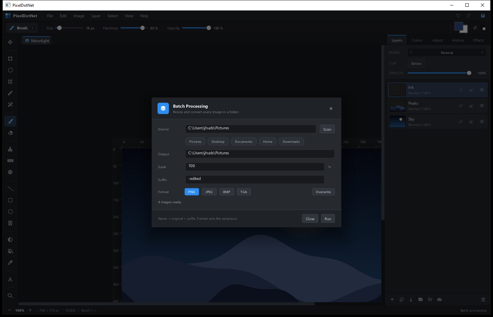
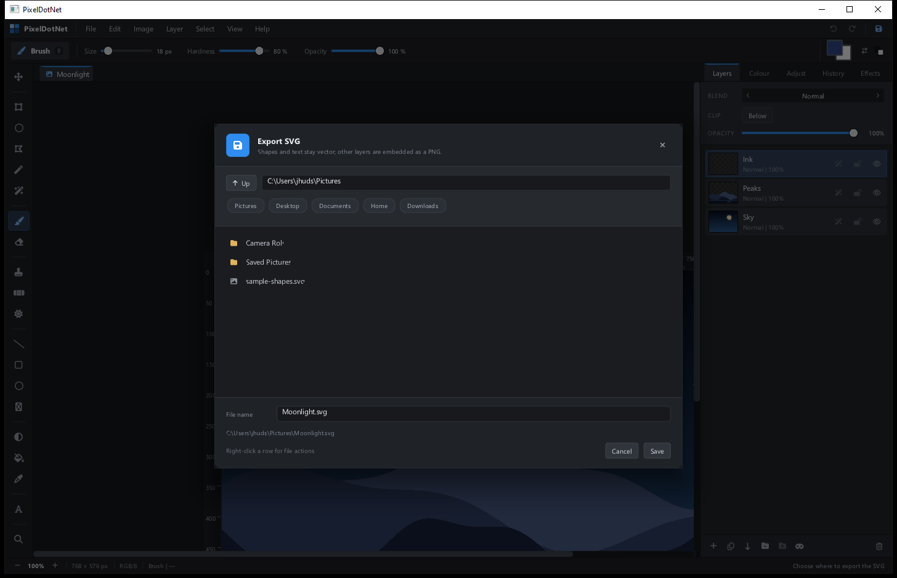
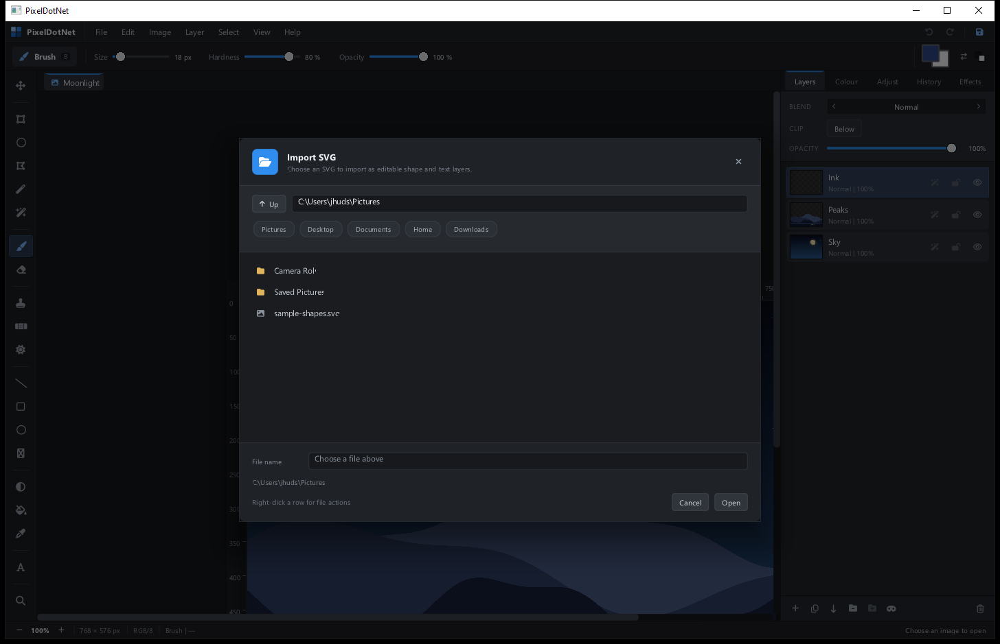

Saving, export and files
How to open a picture, save something you can share, and keep a layered project you can edit again. This chapter also covers tabs, image formats, batch processing, and SVG.
Open a picture
Choose File → Open… or press Ctrl+O. The in-app browser opens and lists PNG, JPEG, BMP, and TGA images. Pick a file and press Open.
To open a layered project, choose File → Open Project… and pick a .pxd file. To import vector artwork, use File → Import SVG….
Start a new document
File → New Document (Ctrl+N) creates a blank 768 by 576 canvas with a white background and one empty layer. File → New Small Document creates a 480 by 360 canvas for quick tests.
If you need a different shape later, use Image → Canvas Size rather than starting over.
Work with several documents
Each open picture appears as a tab above the canvas. Click a tab to switch. Every tab keeps its own layers, selection, zoom, and undo history.
- File → Next Document or Ctrl+Tab moves to the next tab.
- File → Previous Document or Ctrl+Shift+Tab moves back.
- File → Close Document or Ctrl+W closes the active tab. The last tab cannot be closed.
When you save an image or a project, the tab name changes to the saved file name, so it is easy to see which tab belongs to which file.
The in-app file browser
PixelDotNet uses its own file browser instead of the system dialog. There is a folder list on the left, file rows in the middle, and a name field and action buttons at the bottom.
- Click a folder to open it. Use the parent row to go up one level.
- Double-click a file to open it, or select it and press the open button.
- Use the shortcuts on the left to jump to Pictures, Desktop, Documents, Home, or Downloads.
- Right-click a file row to rename, copy, cut, paste, or delete it.
- Use the new-folder button to create a folder without leaving the app.
- The file name field at the bottom shows the name that will be saved.
.pxd projects and SVG files when the matching command is open.

Save an image to share
Choose File → Save… or press Ctrl+S. The browser opens in save mode.
- Choose the destination folder.
- Type a file name. The extension is added automatically.
- Pick PNG, JPEG, BMP, or TGA from the format buttons.
- Press Save.
The saved image is the visible result on the canvas. Transparent areas stay transparent in PNG and TGA. JPEG does not support transparency, so transparent areas become white.
Choose the right format
| Format | Transparency | Best for | Watch out for |
|---|---|---|---|
| PNG | Yes | Artwork, screenshots, pixel art, anything with transparency | Larger files than JPEG for photos |
| JPEG | No | Photos and everyday sharing | Loses a little quality each time you save |
| BMP | No | Simple uncompressed images | Very large files |
| TGA | Yes | Game textures and simple alpha images | Less common for everyday sharing |
| PXD | Yes | Editable layered projects | Only PixelDotNet can open it |
| SVG | Yes | Scalable shapes and text | Ordinary painted layers become one embedded PNG |
Keep a layered project
A project file uses the .pxd extension. It keeps the whole working document, not just the final picture.
A project stores:
- Every layer and its pixels
- Layer names, order, visibility, opacity, and blend modes
- Layer masks and clipping settings
- Groups and their visibility and opacity
- Layer styles
- Smart objects and their transforms
- Shape layers, path nodes, and text layers
- Guides and the active layer
Use File → Save Project… and File → Open Project…. Project files are compressed, so they are usually smaller than you might expect.
Batch process a folder
File → Batch Process… resizes and converts every supported image in a folder. It is useful for making thumbnails, preparing a web gallery, or converting a folder of PNGs to JPEG. The images never open in tabs; the work happens directly from the source folder to the output folder.
- Source. Type or paste the folder that contains the images. Press Enter to confirm, then click Scan to count the files.
- Output. Type or paste the folder where the new files should go. A separate output folder is safer while you check the results.
- Scale. Enter a percentage. 100 keeps the original size; 50 makes every image half as wide and half as tall.
- Suffix. Add text to each output name, such as
-webor-small. The original name is kept and the suffix is added. - Format. Choose PNG, JPEG, BMP, or TGA.
- Overwrite. Turn this on only if you are happy to replace files with the same name.
- Run. The status line reports how many files were written.

SVG import and export
SVG is a vector file format. Shapes are described by geometry rather than a fixed grid of pixels, so they can be scaled without becoming blurry. PixelDotNet supports a practical subset of SVG.
Importing SVG
Choose File → Import SVG…, or open an SVG through the normal Open dialog. Each imported shape becomes a layer.
Supported elements and features:
rect,circle,ellipse,line,polyline, andpolygonpathwith move, line, horizontal, vertical, cubic, smooth cubic, quadratic, smooth quadratic, and close commands- Groups and nested transforms such as translate, scale, rotate, skew, and matrix
- Fill and stroke colours, opacity, fill opacity, stroke opacity, and stroke width
- Basic
textandtextPathelements - Embedded base64 images
Axis-aligned rectangles and ellipses stay as editable shape layers. Rotated shapes become editable path layers. Imported text becomes an editable text layer. Arc commands are imported as straight segments.
Exporting SVG
Choose File → Export SVG…. The file browser opens with an .svg name.
- Rectangle, ellipse, line, and path layers are written as real SVG elements.
- Text layers are written as SVG text, including text on a path.
- All other layers are combined into one embedded PNG inside the SVG.
- Layer and group opacity and visibility are respected.
- Open and closed paths keep their geometry.
Outlines are exported as SVG strokes. Text shadows are not represented in SVG because they rely on a soft blur that vector shapes cannot describe. If you need the exact shadow, export a PNG instead.


Keeping your work safe
- Save a project before anything destructive, such as flattening or a large resize.
- Use PNG when transparency matters. Use JPEG for photos you plan to share.
- Keep a separate output folder when batch processing, at least until you have checked the results.
- If a layer refuses to paint, check its lock icon and its visibility. The status bar often explains the problem.
- Undo is reliable, but it only covers the current session. Save as well.